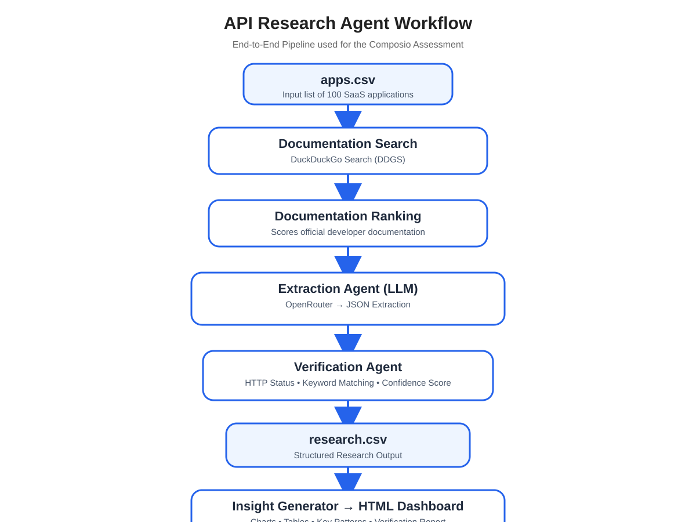

Research Workflow
End-to-end automated research pipeline used to collect, validate and summarize developer API information.

1. App Loader
Reads the list of 100 SaaS applications.
2. Search Engine
Finds official developer documentation using DDGS.
3. LLM Extraction
OpenRouter extracts authentication, API surface, MCP support, blockers, and buildability.
4. Verification
Verifies evidence URLs, confidence, and documentation quality.
5. Insights
Generates statistics, percentages, trends, and summaries.
6. Dashboard
Displays charts, searchable tables, verification, and conclusions.
Key Insights
Automatically generated insights from the research dataset.
Total Apps
0
OAuth2 Usage
0%
API Key Usage
0%
REST APIs
0%
Self Serve
0%
MCP Support
0%
High Buildability
0%
Verified Results
0%
Analytics Dashboard
Distribution of authentication methods, API surfaces, confidence levels and other research findings.
Authentication Methods
Categories
API Surface
Self Serve
Buildability
Confidence
Blockers
MCP Support
Research Results
Complete dataset of researched applications and extracted API information.
| # | Application | Category | Authentication | API Surface | Self Serve | Buildability | MCP | Blocker | Evidence | Verified | Confidence |
|---|
Manual Verification Sample
Random sample of applications manually verified against official documentation.
| Application | Agent Authentication | Manual Verification | Result | Official Documentation | Notes |
|---|
Lessons Learned
Official Documentation Matters
Accuracy improved significantly after prioritizing official developer documentation over blogs, GitHub repositories, Reddit discussions and community articles.
Verification is Essential
Some official documentation blocks automated crawlers (HTTP 403), making manual verification necessary for certain platforms.
Confidence Scoring
Verification confidence provides transparency and highlights which research results should be manually reviewed.
Scalable Pipeline
The research pipeline automatically discovers documentation, extracts structured information, verifies evidence and generates analytics for large SaaS datasets.